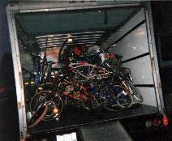

{kind=link}
{kind=link}
{kind=link}
{kind=link}

The Chunk Tour of the 1999 World Trade Organization Riots in Seattle. |
By Dirty McD. |

|
We arrived in Seattle on Sunday night, rendezvoused at Rainier Beer, and headed north to where we were staying. There we unloaded bikes, made introductions, and set out nineteen strong for a Chunk tour of the area, and rode the waterfront down to Gasworks Park. On our way we picked up boxes and boxes of beer and had a brilliant riding party with full view of downtown on the Gasworks pier. We returned to our host's quiet neighborhood by three AM. |
| Photo by Matthew Hattie Hein. |
Monday morning, we fixed the previous night's damage to the bikes, ate a sidewalk breakfast, and headed back to the south of town, where we unloaded bikes, beds, couches, and a barbecue in Chinatown. We had little rides, did more repairs, were interviewed by a Japanese-American paper, and had extensive conversations with complimentary motorcycle policemen. Then we set off for downtown. We had an extensive tour of a very uncongested downtown, the police gave us a complete motorcade! It was raining heavily when we finally entered the direct action network headquarters at five o'clock. This was a warehouse space teaming with radicals of diverse variety, all extremely active, coming and going through tiny hallways. It was a major production in action, the closest I've felt to entering a beehive. Pretty impressive! We left and joined a squatters movement down the street: a bunch of homeless folks and their sympathizers took over some abandoned Seattle buildings to the consternation of the police. By six o'clock we met up with our sister bike club in Seattle, the Dead Baby Bike Club. We piled into their garage and proceeded to drink and talk bikes and compare our creations. Somehow when we arrived, we had lost my housemate Stephen, who had no way of locating us.
| Photo by that Japanese-American newspaper. |
At seven we chunked with elation through town, and close to our destination we ran into the steelworkers' march. We caught the tail end and there found Stephen. We rode in support of the march, and were given great acclaim. We rode to honor them, hooting and hollering, and spoke with John Sweeney, the president of the AFL-CIO, while walking our bikes with the crowd through a small corridor. Afterwards we returned to our sister bike club headquarters near the Seattle Center.
This is where the intensity begins that doesn't let up until we lose the Seattle radio stations on our drive home. In the Dead Baby Bike Club garage, I talk with their founding members with passion, enthusiasm and genuine love. I befriend three of them and we all throw around sincere compliments, all sorts of wide-eyed responses in the smallest of workshops. We exchange histories, philosophies, and strategies, talking in elaborate systems of thought; Dakota tells me about the Bicycle Messiah and the religious aspects of their club. I am out of my mind. I try to fill them in on how we actually live up to everything they have read about us in our zine. They didn't think we still existed, that we were all a figment of Karl's imagination. Lovely time.
Social Organization of the Chopper Bike Clubs of the World.The chopper bicycle clubs of the world have differing social organizations. C.H.U.N.K. is mostly a meritocracy. Those who make the bikes get to ride the bikes, and newcomers who don't put something together themselves usually end up with the crappier bikes until they show that they can ride well and won't abandon them in frustration across town. Bikes are sometimes considered the property of their constructors, but more often, enough hands have destroyed and repaired a bike (in some cases, a bike has broken into parts which have been incorporated into several new rides) that there is an unspecified circle of people who can ride it. New members of S.C.A.B., it is said, are required to make and bring their own bikes. The D.B.B.C. is an theocracy, ruled by their queen. Perhaps she doesn't command them at all times, but she is their spiritual interpreter and inspiration. |
| Photo by Silken Thomas. |
One hour later the clubs join for a tour of the Seattle Center and surrounding area. We are about thirty strong and some of us are high out of our minds. I can no longer converse with the Dead Baby Bike Club, nor with my friends. The rest of the night is all about getting lost, highly complex circumnavigation patterns about Seattle Center's enormous and deep fountains, strange interactions with downtown's street folk, broken bikes, scary encounters with cars, difficulty following traffic rules, and brilliant smooth invigorating pedaling. Moods range from complete elation to the disturbed. We ride until morning.
By morning, only a few of us were left. There was no more room inside the Dead Baby garage, so four of us slept in the U-Haul. Two hours later, at six AM, we were woken by six policemen who were rude, poor with their words, and out of their element. They threatened to arrest me but couldn't find a charge that wasn't pure bullshit, hokey. Obstructing justice for sleeping in a Uhaul in a paid parking spot? We provoked them. They got real ugly, and then when they tried to make small talk about our bikes, Stephen told them he didn't wanna talk to them, that they should leave us alone. And then they left angry, we think somewhat ashamed.
| Photo by the Willamette Week, we think. |
Six was our wake up time anyways, so we got up and proceeded to the middle of town. We went for a morning ride around the many hotels that the dignitaries stayed in, a tour of the big scene: all the cops, the sections of town blocked off by city bus barricades, the early morning activities. Plenty was going on but not near the amount of people we were hoping for, because the twelve different marches from the periphery into town had yet to converge upon the convention center and surrounding intersections. We rode around, got on the morning news with a short interview, and tried to locate our organizing friends to no avail. Denk and I returned to the Dead Baby shack for an early morning nap. I slept next to the puking minor who had latched onto our group back in Portland, but I didn't sleep too well cause I was still tripping.
By eleven in the morning things had reached a fierce intensity. Police and protesting groups fought over control of the street. Masses of people could take over the police. Masses of police with their armor, gas masks, tear gas, pepper spray rubber bullets, and flash grenades... could move the people. Intersections would switch back and forth throughout the day. For the most part on the protester's side it was non-violent. We rode around the periphery, and were distractions and diversions for the police. We occasionally got center stage in the middle of intersections claimed by lines of people chained together, where we performed mini Chunkathlons. All day we rode through streets closed off by the police and along with the rest of the crowd disobeyed the order they tried to establish. The police had no control over most of the city throughout the day and when they did acquire territory it was only with full armor and crowd control devices, which met fierce condemnation from the slow moving crowd.
At one point Stephen got his hair pulled, was pepper sprayed, and had his bike kicked out from under him. An arrest was threatened and the police still have his bike. Most people say how brave Stephen was and how dumb the cops were, but my new friend Thad told me Stephen pretty much provoked the whole thing.
| Photo by Silken Thomas. |
The moment by moment reciprocating acquisition of territory occurred on intersections throughout Seattle all day. In the meantime, union marches charged through downtown fairly independently from the fringe group activity, as they were protected by the police and allowed passage in police territory, and in the protester's territory were given firm support. One portion of a union parade was diverted into a police/protester intersection competition. The steelworkers and longshoremen came to support the protesters. This got particularly bloody, or at least gassy and explosive, with fires, projectiles, and all sorts of commotion. We heard this event by radio from our homebound car at about three o'clock in the afternoon.
So we took over intersections, shut down the WTO conference, and caused general mayhem all throughout downtown Seattle. You may ask what our reason was for doing this. There is an enormous variety of reasons. I guess that over fifty fringe groups participated, all of whom have differing but these days unified interests. At the twelve intersections surrounding the convention center were groups like Greenpeace, Earth First, Free Tibet, Taiwanese independence, Copwatch, and seven others (I can't remember). Outside of this there were normal everyday Seattle citizens, anarchist groups (who did the majority of the vandalism, dressed incognito in black with black bandanas bandito-style), Christian Scientists, Methodists, a plethora of women's groups, Jewish groups, etc. etc. And then there were the super-fringe groups like Chunk and the Dead Baby Bike Club, Free Bikes of Montana, and probably tons of others. Many were there as much for finding a good audience as for protesting -- the nature of fringe group gatherings.
For the most part the weekend was fun-filled, intense, highly charged, marathonic, and eye-opening. It was with a lot of regret that we left Seattle when it was still at such intensity. Chunk had its biggest ride in history outside of Portland and maybe the longest in duration. The next big event is the millennium ride. It is safe to say that Seattle is already having theirs. I wanna forget everything but the moment when were entrenched in something magical and spectacular.
| Photo by Matthew Hattie Hein. |
| Copyright 2003 Megulon Five <megulon5@dclxvi.org>. |
|
This work is licensed under a Creative Commons License. | Last modified 9 October 2001. |